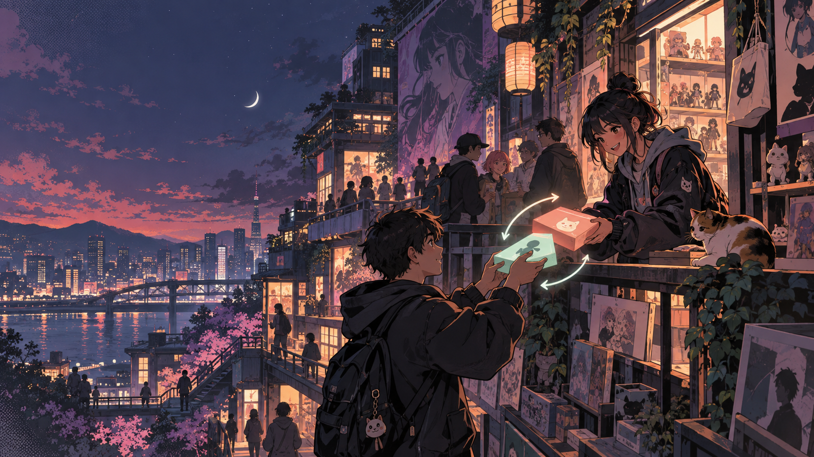
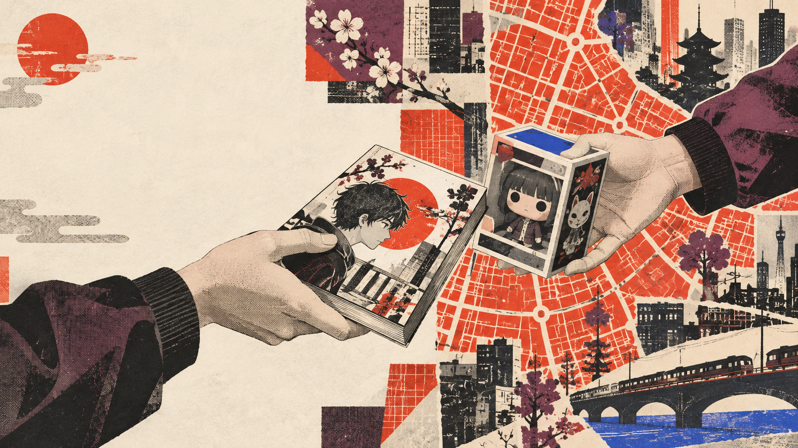

Es la historia visual más fuerte para portafolio y aprovecha mejor las portadas e imágenes existentes.
La interfaz necesita explicar el producto en segundos, dar protagonismo a las publicaciones reales y construir confianza entre dos personas que coordinan un intercambio.
Una entrada urbana y cinematográfica conduce a un catálogo disciplinado. Su contraste entre coral y menta permite distinguir acciones, estados y actividad sin recurrir a colores estridentes.

#111426#202442#FF7A6E#80D8C7#F4EEE8Una identidad impresa, autoral y expresiva. Las tramas aparecen solo en portadas y comunicación; las zonas operativas conservan papel limpio para que cada publicación siga siendo legible.

#F3E9D3#181513#E84A2A#64374D#2855D9La alternativa más luminosa y accesible. Presenta Mundo Otaku como una comunidad ordenada y confiable, con superficies cálidas y acentos suaves que funcionan bien en sesiones largas.
#FFF9F1#173A3B#4C8E8B#D97862#B8A9D9Es la historia visual más fuerte para portafolio y aprovecha mejor las portadas e imágenes existentes.
Superficies limpias, jerarquía calmada y formularios cómodos para el área autenticada.
Sus tramas pueden vivir en campañas, estados vacíos y piezas editoriales sin dominar el producto.
Sistema de tokens, acceso adaptable, navegación principal, catálogo con los ocho productos reales y detalle con el flujo “Proponer intercambio”. Después se aplicaría la misma base a bandeja, chat y publicación.